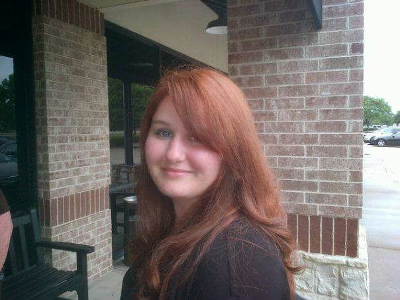

Angie Smith, Web Developer
Summary of Qualifications
- Experience as a freelance web developer
- Experience with HTML, CSS, and Javascript
- Treehouse Graduating Class of 2020
Education
- Dallas County Community College 2002-2006
- Bishop Lynch High School, 1997-2001
Employment
- Matchbox American Kitchen 2017-present
- Red Hot and Blue BBQ 2005-2017
- JH Tellini Co 2002-2003